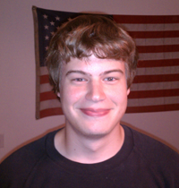
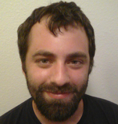
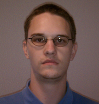

| Idaho Cost and Budget Management |
|---|
| A team developing the Idaho Department of Health/Welfare Time, Accounting, and Reporting System |
Scott Beddall

My name is Scott Beddall, I was born and raised south of Seattle in a small town called Maple Valley. As long as I can remember I have been either working with computers or finding some way too use them for my own entertainment. I have played soccer competively for most of my life, and at one point considered playing college soccer as well. Unfortunately, a degree in the Engineering College does not find itself well suited to competitive sports, so I have focused all my attention on my Computer Science degree. After graduation I hope to find a great job in the Seattle area.
Chaylo Laurino

My name is Chaylo Giovanni Laurino. I was born in the small town of Cottonwood Idaho to James and Naomi Laurino. In my youth a reveled in puzzles, history, and creative building toys such as Legos. We moved several times which made forming long term friendships difficult so I tended to be something of a recluse. Several stints in several Catholic Schools resulted in my tendency to question everything and toward seeking knowledge and understanding. It wasn't until 5th and 6th grade that I finally formed two friendships that have lasted to this day, although those friends have drifted from each other. I have always enjoyed technology and even recall my first experiences with computers. I found them fascinating and still do. I wish I could have learned more early on. In High School I was finally able to take classes in Networking and Technical Support. The later being my preferred career and the area I have the most work experience in. I chose to Major in Computer Science because I enjoy computers as well as programming. There is always something to learn and I see programming a puzzles to be solved. I hope to round out my computer education with Technical Support and Networking certificates. After graduation I will pursue a career in either programming or Technical Support.
Alex Nilson
My name is Alex Nilson. I grew up in Milton-Freewater, Oregon, a small town near Walla Walla, Washington. I've been interested in computers pretty much all my life and this has resulted in my studying Computer Science at the University of Idaho. I plan to graduate at the end of this semester, and I hope to find a job somewhere in the industry before then.
Brett HitchCock

My name is Brett Hitchcock. I was born and raised in northern Idaho. I attended the Coeur d'Alene Charter Academy for all of high school. I am currently studying Computer Science and intend to graduate this December. I am particularly interested in graphics and advanced data structures.
../team